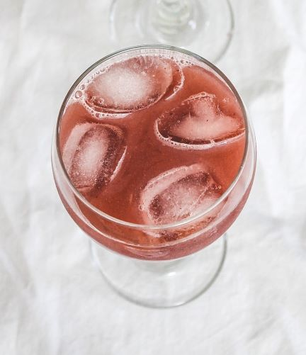

બટાકા ભૂંગલા

સમગ્રીઓ
| દ્રાક્ષ |
| ખાંડ |
| એલ ઇમોન જ્યુસ |
બનાવવા ની રીત
1) પહેલા વહેતા ઠંડા પાણીની નીચે દ્રાક્ષને ધોઈ લો, ધોતી વખતે હળવા હાથે ઘસો. પછી દાંડી અને ઓવરપાઇપ, સોફ્ટ રાશિઓ દૂર કરો. બેક્ટેરિયાથી છુટકારો મેળવવા માટે બાકીની દ્રાક્ષને 5-10 મિનિટ માટે પાણીમાં પલાળી રાખો. (મેં ઓર્ગેનિક દ્રાક્ષનો ઉપયોગ કર્યો છે અન્યથા તમારે જંતુનાશકો દૂર કરવા માટે ધોવા માટે મીઠું અને સરકોનો ઉપયોગ કરવો પડશે).
2) સ્વચ્છ દ્રાક્ષને બ્લેન્ડરમાં પાણી અને ખાંડ સાથે લો.
3) તેને સ્મૂધ થાય ત્યાં સુધી બ્લેન્ડ કરો.
4) ચાળણીનો ઉપયોગ કરીને રસને ગાળી લો અને પલ્પ (જેમાં ચામડીના ટુકડા હોય) કાઢી નાખો.
5) હવે તાજા લીંબુનો રસ નીચોવી અને હલાવો.
6) તે સર્વ કરવા માટે તૈયાર છે.